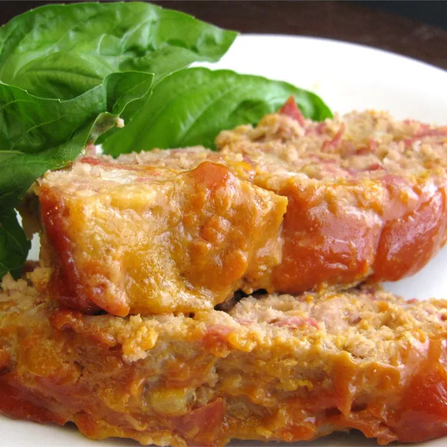

Cheeseburger-meatloaf

Description
This is my variation of a classic cheeseburger meatloaf using ground turkey and turkey bacon in place of beef and pork. The key is the sauce — yum!
Ingredients
- Turkey meat
- Onion & garlic
- Vegetable oil
- Egg(s) (1)
- Ketchup
Steps:
- Preheat oven to 200 degress C.
- Heat vegetables in pan
- Mix turkey and ham and ground it
- Stir mustard and ketchup and add vegetables
-